Вечер 1
Шов на рассвете
Войти в шов до восьмого счёта, пройти Висячие зубья и спуститься к первой ступени Лестницы дыхания с тайником прежней экспедиции, а заодно научиться читать лист глубины и запаса.
Открыть сценарий →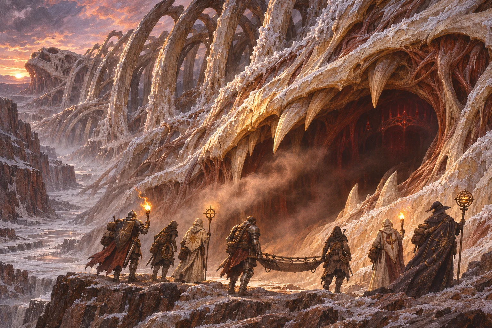
Раз в сутки, на рассвете, в боку полуживого титана Олома расходится костяной шов — и через восемь счётов сходится снова. На пять уровней вглубь лежит костяная корона, в которой, говорят, всё ещё звучат голоса погибших искателей. Дара Вей наняла вас принести её наследство. Спуск идёт уровень за уровнем, с пайками и факелами, которых не хватит на всё: чем глубже, тем дороже свет. И обратная дорога не обязана остаться прежней.
Перед чтением вступления сверьте место героев, присутствующих людей и предметы с итогом прошлого вечера. Если условия встречи отпали, сыграйте последствия там, где находится партия. Событие по расписанию может произойти за кадром. Герои узнают о нём от тех, кто был на месте.
Узнайте, насколько близко отряд прошёл с огнём. Если не было ни одного условия пробуждения, оставьте сидящих на месте, а тайник за спиной. При обратном проходе ведущий откроет ту же запись.
Запишите, у кого рама Марка и где на самом деле разбит привал. У ламп в оставленном лагере может осыпаться паутина. Утром проверьте, какие связки дошли по уговору и сколько стоил лишний переход.
Идущий отвечает на тепло. Уточните путь сосуда и носителя следа. Разыграйте встречу на соответствующем участке для тех, кто туда вошёл. Оставшимся внизу дайте собственный выбор места и времени подъёма.
Свяжите последний отсчёт с местом гнезда и теми, кто остался его видеть. Для ушедших сыграйте ожидание вести от Освина или Дары. Что стало с гнездом, герои узнают в тот момент, когда весть действительно придёт.
За короной не полезем. Остаёмся считать выходящих у шва. Пересчитываем вышедших у шва без спуска за венцом. Записываем имена вышедших, оставляем пустое место для пропавших. Гнездо остаётся внутри.
Попросим проводников показать зерно и понаблюдаем с уступа, куда сходятся нити, прежде чем кто-либо коснётся венца. Доступные свидетельства — Зёрна, Чаша. Из зёрен венца выходят живые существа, а нити сходятся к костному мозгу. Венец служит гнездом. Просим проводника смотреть на нити, пока мы держимся в стороне. Предупреждаем носильщиков у верхнего выхода и оставляем гнездо на месте. Отряд выносит людей, за венец никто не получает платы.
Сидящие удержали проход у Зубьев и отрезали часть припасов. Урезаем ношу, чтобы ближайшему носильщику хватило сил вернуться. Сокращаем глубину следующего спуска и идём обратно по своим отметкам. У шва считаем вышедших без обещания вернуть поклажу.
8 сессий по 3 часа 5 минут: 10 минут начала и сверки листа глубины, четыре сцены по 35–45 минут (всего 160 минут), перерыв 15 минут после второй сцены. Отдельного «закрытия» нет: вечер кончается в четвёртой сцене. Подготовленные герои — уровень 3. Прочитайте первую сессию, выберите состав и передайте игрокам отдельную страницу героев.
В мастерской создайте или откройте свой черновик, выберите импорт пакета и укажите package.json либо нужный файл из variants. Проверьте сценарий и состав в предпросмотре; активацию подтверждает ведущий. Сюжетные развилки, часы давления и жанровые действия разрешаются ведущим — они не становятся автоматически сыгранными событиями.
Пакеты разных размеров используют первые N героев в порядке карточек. Дополнительные герои дают новые роли, но не обязательные ключи к истории. Выбор произвольного состава требует правки черновика и повторной проверки.
Подземелье, которое дышит: кость под ногами, мозг в полостях, факел, который приходится считать. Ужас — в глубине, голоде и в том, что находка оказывается живой; не в подробностях тел.
Войти в шов до восьмого счёта, пройти Висячие зубья и спуститься к первой ступени Лестницы дыхания с тайником прежней экспедиции, а заодно научиться читать лист глубины и запаса.
Открыть сценарий →Спуститься по дышащей Лестнице к Нижней воде и взять тайник в нише трёх узлов.
Открыть сценарий →Переправиться через Нижнюю воду к биваку, договориться с Марком и пережить ночь под складкой, не потеряв связки на раме.
Открыть сценарий →Пройти Рёберный лес по неподвижному, взять третий тайник и миновать Алый поворот.
Открыть сценарий →Дойти до венца и своими глазами понять, что он такое, прежде чем решать, что с ним делать.
Открыть сценарий →Подняться из Колыбели узким путём, миновать Идущего следом и найти Веду на чёрном дне Кармана эха.
Открыть сценарий →Протиснуться по узким лазам к Световой щели, взять свёрток Стася, передать ему весть для Дары и выйти на Лестницу дыхания раньше гнезда.
Открыть сценарий →Встретить гнездо у шва на рассвете и решить бой до восьмого счёта: разбить чашу, свалить тушу или вывести живых, пока губы не сошлись.
Открыть сценарий →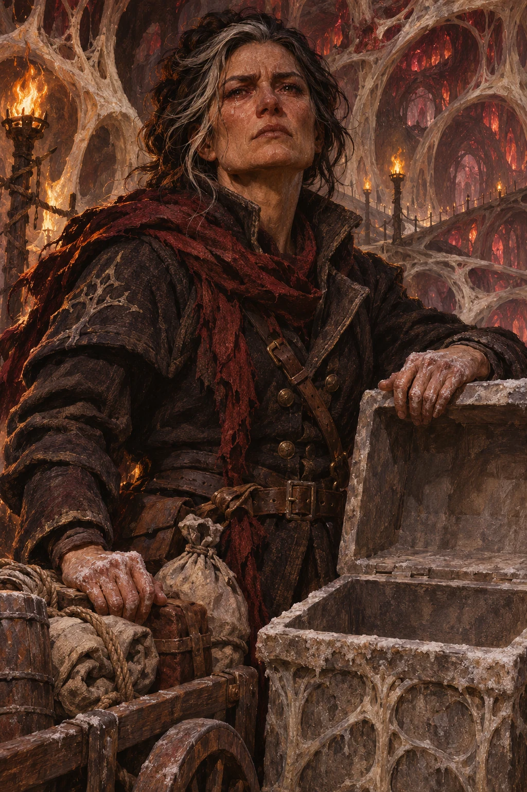
Женщина в тёмной шерстяной куртке, руки в соли; у ног повозка со связками запаса и пустой каменный ларь.
Нанимательница. Платит за возвращение людей, даже если находки не будет. Хочет получить наследство бабушки из глубины Олома.
Услышать голос Эрны и спросить, простила ли та её; не признаться, насколько это для неё важно.
Семь лет назад, в ночь ухода экспедиции, Дара сказала бабушке: «Иди, раз мёртвые тебе дороже живых» — и не пришла провожать. Чтобы заплатить отряду, она продала дом. Что корона — гнездо, она не знает; о голосах знает лишь от Освина.
Внутрь не идёт. Не обещает награды за корону сверх оговорённого и не требует нести венец ценой людей. Не знает ни внутренней карты, ни того, что внутри.
О ссоре говорит, только если её спросят прямо, почему она не пошла с Эрной. В вечер 8 через шов сама спрашивает о бабушке.

Невысокий человек с белой бровью, старые верёвочные петли на поясе сложены по длине; в руке фонарь в сетке.
Бывший носильщик экспедиции Эрны, единственный вышедший. Считает счёты у шва, ведёт отряд через Висячие зубья и ждёт у внутренней губы следующего рассвета. Глубже не идёт.
Довести отряд до Лестницы, выйти самому и больше не давать обещаний, которых не сдержит.
В Колыбели общий голос назвал его имя, и Освин бежал, не оглянувшись; он верит, что звала Эрна и что он её бросил. Это его убеждение, не факт. Мёртвые, сидящие у Зубьев, — его товарищи по экспедиции; одного, Гната (ему было 40), он узнаёт по куртке.
Не спускается ниже Зубьев. Не рассказывает того, чего не видел, и не знает, что находится в венце.
Имя Гната вырывается у него, когда факел освещает мёртвых (вечер 1, сцена 2). О бегстве рассказывает на привале, если его спросят, что было в Колыбели.

Невысокая жилистая женщина с коротким шестом, полосами сухой ткани на рукавах и пустыми мешками за спиной.
Перевозчица на матах через Нижнюю воду. Еды у неё нет; охотно сравнит наблюдения о воде и обменяет сухие мешки на правду или помощь.
Выбраться живой с тем, что окупит долги, и больше никогда не переправляться.
Иста собирала на берегу тёплые белые обломки, чтобы продать снаружи как «мощи». Мешок с ними она оставила на дальнем мате; сухая длинная фигура пошла за мешком, а не за ней. Ей стыдно, и она не уверена, что дело в кости.
Не переправляет никого на дальний мат и не берёт кость в руки снова. Не знает ничего о Колыбели и о том, что такое корона.
Про мешок говорит, когда отряд рассказывает о фигуре у дальнего берега, или когда её спрашивают о пустых мешках.

Человек в аккуратно заштопанном плаще среди рулонов шерсти; рядом разобранная широкая рама и две сальные лампы.
Глава маленькой экспедиции (с ним остался разведчик Тихон). Готов обменять связки на руки для рамы: он хочет вынести венец целым.
Вынести венец целым и услышать в нём голос жены Ивоны, умершей в Оломе три года назад (ей было 34).
Марк верит, что голос Ивоны в венце, и что под шерстью любая находка безопасна; второе он проверил лишь на одном осколке. Для ведущего: Ивона погибла в другом ответвлении, в венце её нет; Марк этого не знает.
Не отнимает у отряда силой и не идёт против прямой просьбы Тихона. Свою уверенность в безопасности находок подаёт как мнение.
Имя Ивоны произносит в вечер 3, рассказывая, зачем пришёл. В вечер 4 слышит его из-за изгиба, в вечер 5 решает резать корень.

Молодой мужчина с катушкой короткого шнура, меловыми полосами на плечах и лампой с треснувшим стеклом.
Разведчик Марка. Сверяет старые меловые метки с нынешними проходами Рёберного леса.
Довести людей до верной развилки и перестать считать отступление позором.
Тихон скопировал меловую стрелку на повернувшуюся арку; по ней двое людей Марка, Ждан (31) и Ольха (27), ушли не в ту ветвь и не вернулись. Марку он не сказал. Мёртвые у третьего тайника — они.
Не зажигает лампу у мёртвых, если рядом кто-то с ним говорит. Не врёт, когда спрашивают прямо. Не знает, что такое венец.
Узнаёт Ждана и Ольху у тайника (вечер 4, сцена 2) и признаётся про стрелку, если его не обвиняют.

Высокая женщина с высоким воротом, маленькой сумкой у бедра и вытертыми мягкими накладками на ремнях.
Искательница-одиночка. Пережидает движение стен у поворота на чёрном уступе и предлагает обменяться сведениями о пути к Колыбели.
Выйти живой и с находкой, которую можно продать; она в долгах.
Устина дошла до Колыбели и отломала с края венца тёплый белый осколок — зерно. Сухой стук идёт за ней от самой Колыбели. Она прячет сумку из стыда, а не чтобы погубить отряд; что венец живой, она не поняла.
Не отдаёт осколок даром и не идёт снова к Колыбели. Не знает, что такое венец и что за существо идёт за ней.
Показывает сумку, когда отряд объясняет, что стук идёт за ней (чёрный камень, следы), или сама предлагает обмен на футляр.
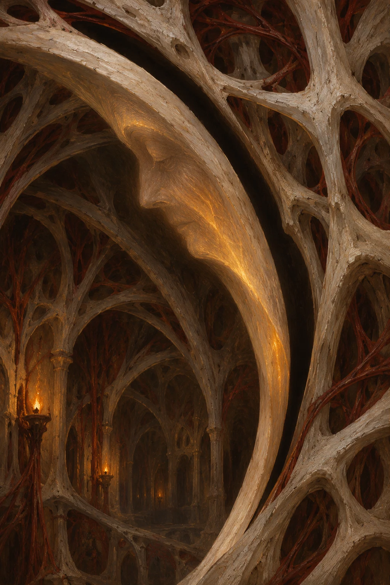
Одна гладкая дуга белой решётки качается отдельно от остальных; из неё отвечает низкий женский голос. Самой женщины не видно.
Голос в венце. Называет себя участницей прежней экспедиции и спрашивает о небе. Возраст указан на момент человеческой смерти.
Чтобы её не вынесли наружу вместе с венцом, чтобы её кость отломали и положили на соль, и чтобы передать Даре одно.
Эрна отказалась нести венец, когда поняла, что он живой, и её экспедиция погибла у Колыбели. Общим голосом венца она говорит со всеми, но одна ещё говорит «я». Объяснить венец до того, как отряд увидел его сам, не может: общий голос звучит поверх неё.
Не советует, как сражаться, не просит никого остаться и не говорит о том, чего не помнит. Пока отряд сам не увидел венец, говорит только о небе, о Даре и о своём «нет».
Своим голосом говорит после первого наблюдения отряда или как только её кость отломана. Ответ Даре даёт, если отряд спросит о ней.

Женщина в сухом плаще сидит на чёрном каменном дне; рядом широкая сумка, из которой выступает край глиняного сосуда.
Застряла: сосуд не пролезает в узкий лаз к Световой щели. Идти может сама.
Похоронить спутника Яроша (умер три недели назад у Провала, ему было 55) снаружи, на соли.
В кость Яроша уже вошла нить; сосуд тёплый, и сухой стук ходит под Карманом. Веда знает, что на чёрном дне он её не трогает, и молчит, боясь, что её заставят бросить сосуд.
Не бросает сосуд по чужому приказу: решение должно быть её. Не знает, что такое венец.
О тепле сосуда говорит, если ей предложат выход, в котором Ярош не останется в темноте один.
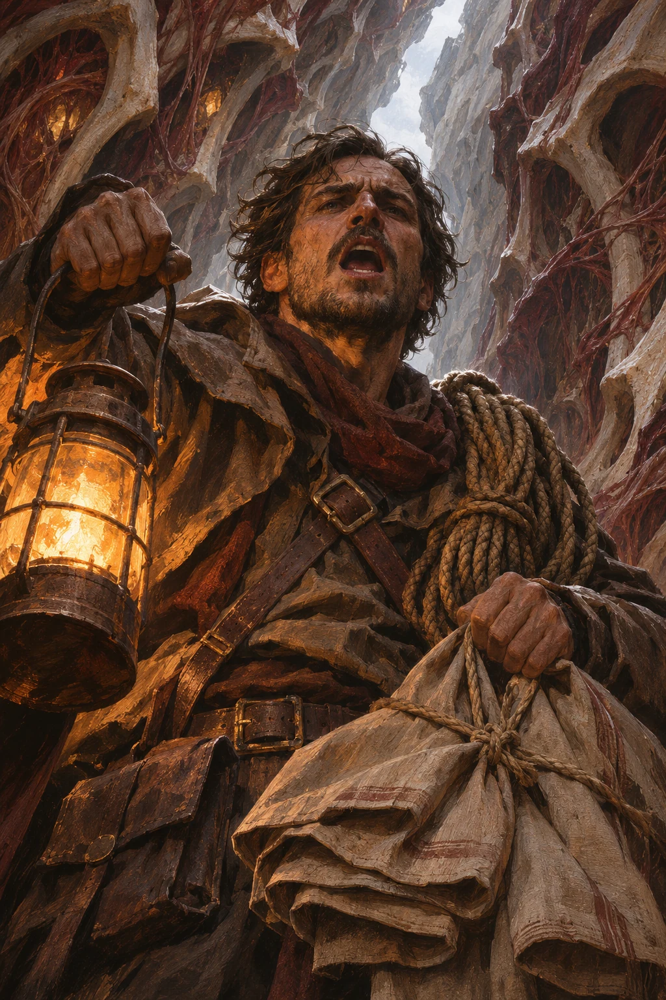
Голос и тень наверху, в полосе дня; фонарь, бухта верёвки и связка пустых чехлов.
Снаружи, на карнизе над Световой щелью. Каждый полдень спускает верёвку и зовёт Веду.
Вытащить Веду и не превратить ожидание в ещё одну причину не уходить.
Стась ушёл наружу на рассвете, когда Ярош умер, оставив Веду внизу; говорит себе, что пошёл за помощью. Вернуться внутрь боится.
Внутрь не спускается и не уходит, пока в щели свет. Не знает, что делается ниже.
Признаётся, что бросил Веду, если с ним говорит сама Веда или если его спросят, почему он снаружи.

Титан лежит поперёк соляного ущелья. Раз в сутки, на рассвете, по всему его телу проходит долгий вдох: ветер тянет внутрь, а потом выдыхает наружу тёплым.
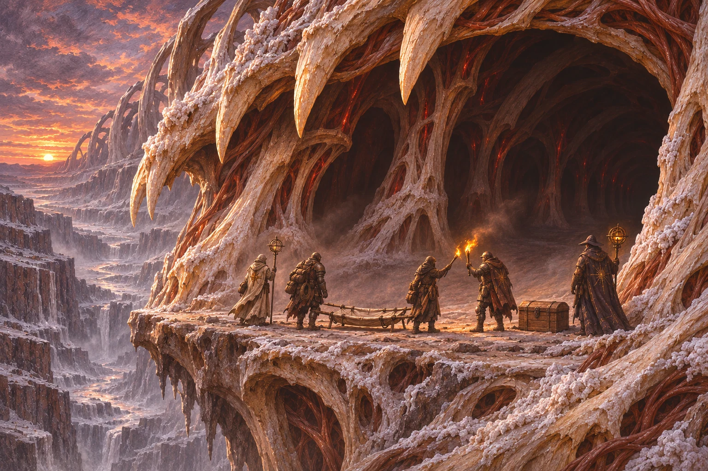
Костяной шов в боку Олома над ущельем: две губы в восьми кольцах соли. Внутри — низкий зал с внутренней губой. Шов открывается на рассвете и держится восемь счётов, потом сходится.
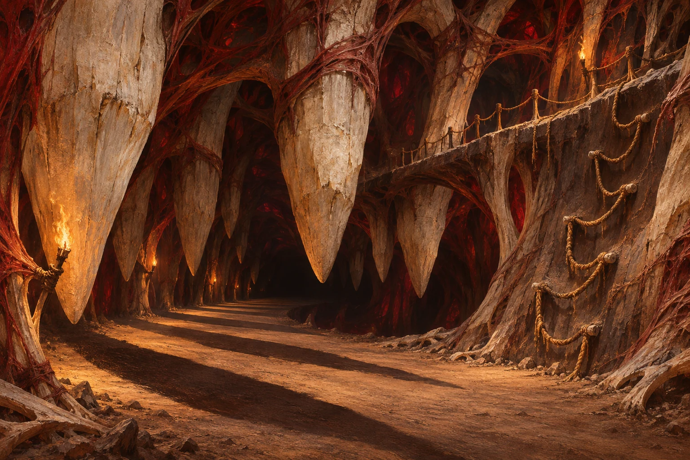
Белые столбы свисают со свода и слабо светятся, как молоко в темноте. Внизу между ними идёт тропа; вверху — узкий карниз со старыми верёвочными петлями. Пахнет солью и старым салом.
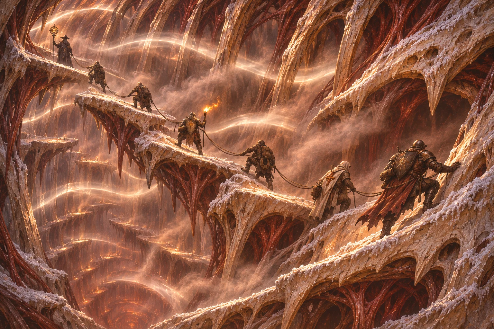
Наклонные уступы тянутся вдоль тёплой шахты. Светлые полосы на костяных стенах поднимаются и опускаются вместе с ветром, показывая края площадок; за тонкой стенкой медленно движется что-то бледное.

Тёмное озеро у низкой косы. Волокнистые маты плавают, как острова, и медленно расходятся; вдоль стены тянется долгая твёрдая полка. С каждым вдохом Олома вода поднимается по берегу.
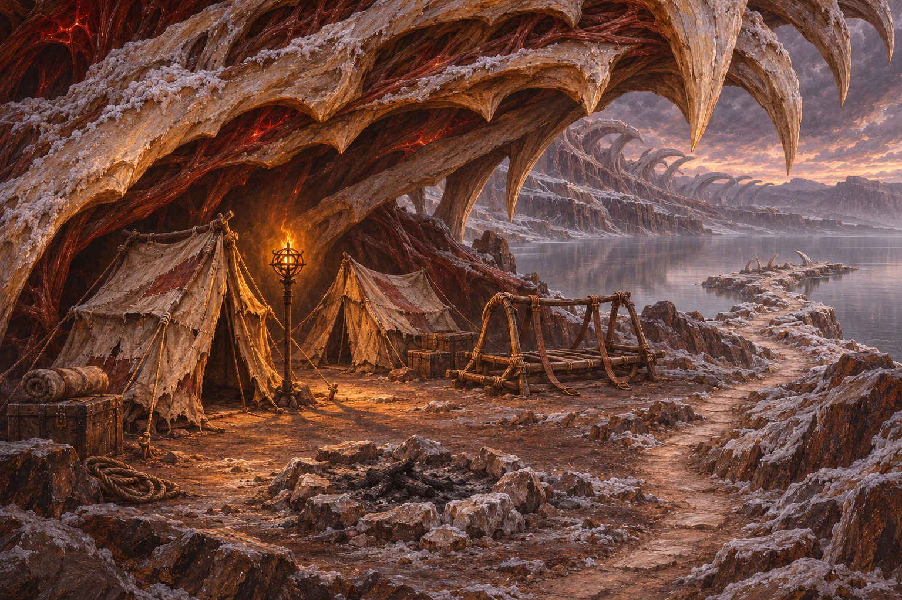
Под нависшей складкой стоят две палатки, широкая грузовая рама и сальные лампы. Высоко в складке висит старая паутина. Это временный лагерь небольшой экспедиции.

Белые арки медленно поворачиваются и скрывают друг друга; на них видны меловые стрелки. По полу тянутся чёрные каменные полосы, которые не двигаются.
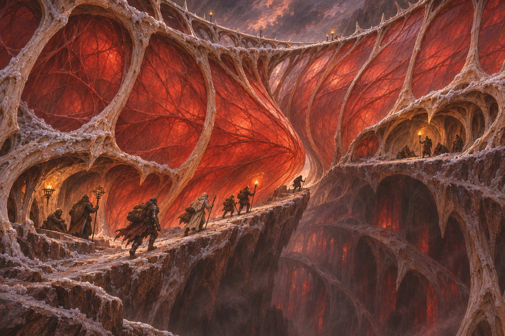
Две полупрозрачные стены то сближаются, то расходятся у крутого изгиба. Сбоку виден чёрный уступ, где можно переждать; пройти можно в широкий просвет.
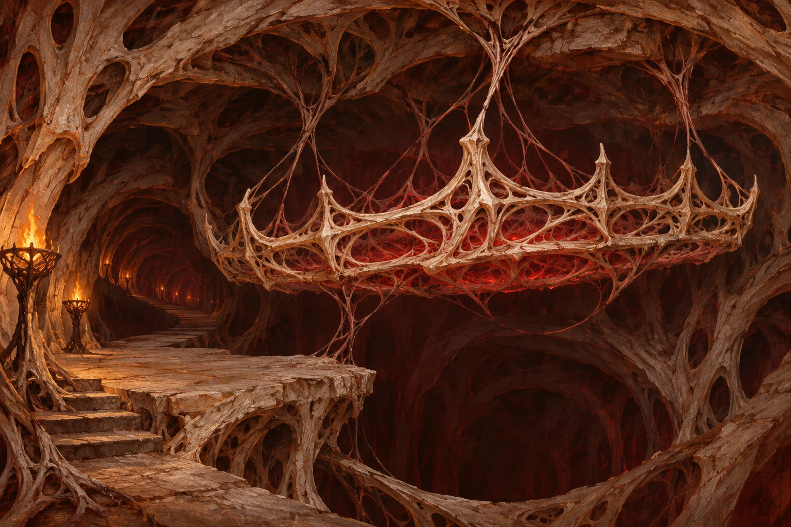
Под низким сводом на тонких светлых ветвях стоит белая решётка величиной с носилки, а под ней — тёмное углубление. Сбоку есть сухая площадка и косой проход вниз. Здесь тепло и пахнет салом.

Наклонный жёлоб кончается стенами, которые медленно трутся друг о друга и мелют белые обломки в пыль. Высоко сбоку виден тёмный лаз вверх.
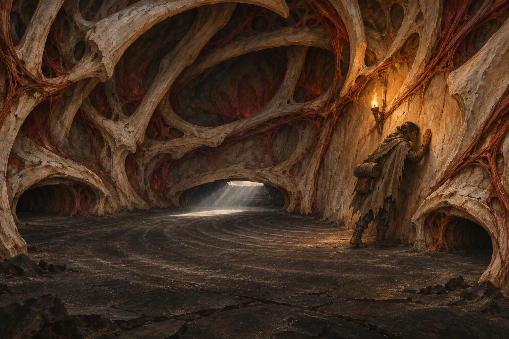
Сухая полость с чёрным каменным дном и тремя узкими лазами. Слова возвращаются отсюда не с той стороны, с какой были сказаны.
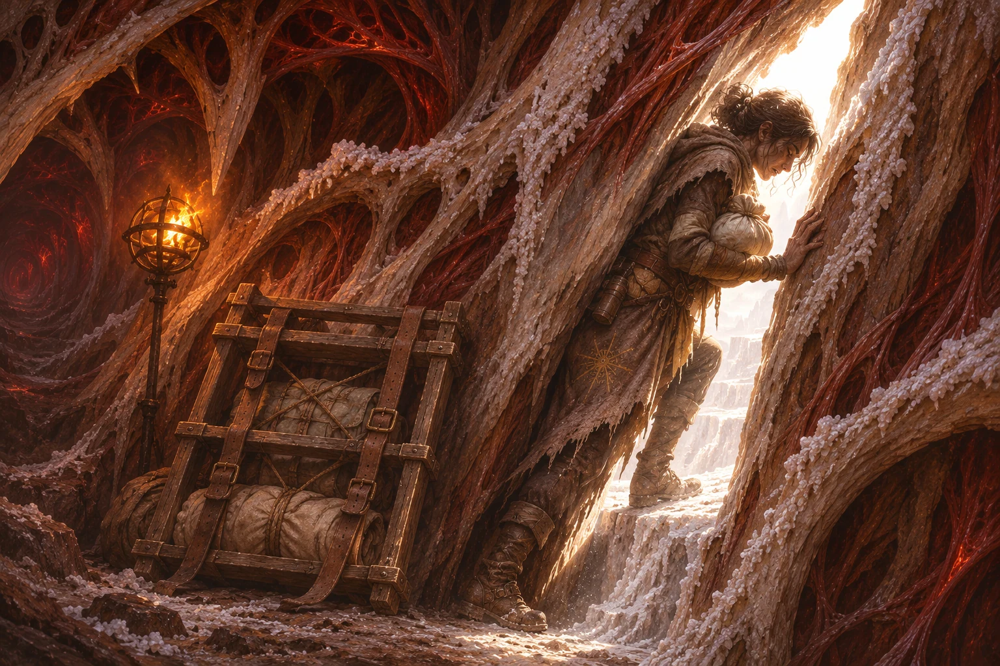
Узкая косая трещина; в полдень сверху падает полоса дня. Человек с мягким свёртком проходит здесь боком, но выбраться наружу слишком высоко и слишком тесно.

Кованый крюк-кошка с тремя загнутыми лапами, потёртый до блеска на изгибах. К кольцу привязана верёвка в двадцать саженей: на ней много узлов, часть из них выцвела так, что почти слилась с волокном.
Раз за вечер заменяет одну проверку подъёма или спуска безопасным путём без броска: сцена идёт медленнее, но цены на шкалах нет. В вечер 1 крюк можно закрепить на внутренней губе шва за один счёт, и тогда спуск в сцене 2 проходит без броска. Крюком можно подтянуть к себе лежащую вещь по полу. Отсутствует игрок — крюк переходит действующему герою ядра.
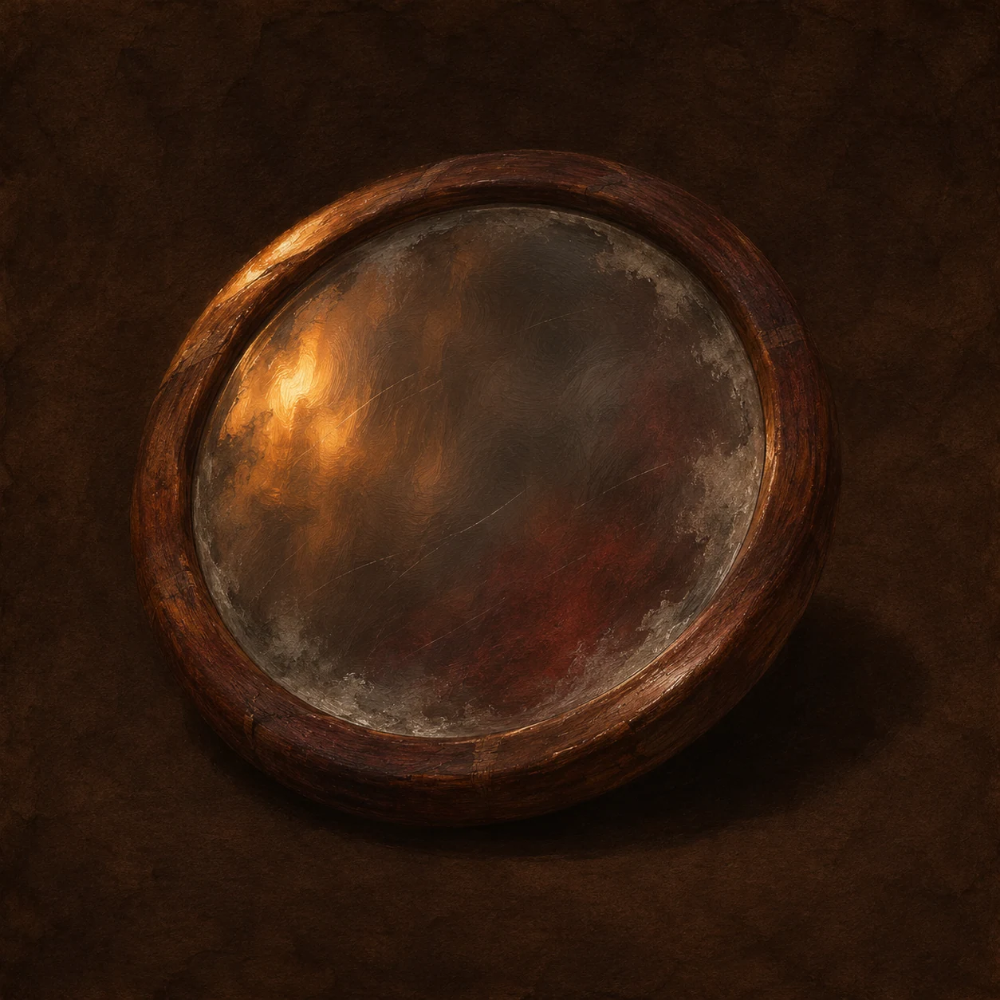
Маленькое круглое зеркало размером с ладонь в оправе из тёмного дерева. Стекло чуть мутное по краю, зато в центре ловит даже слабый свет. Оправа вытерта пальцами до гладкости.
Отбрасывает свет факела за угол или вниз: так можно заглянуть туда, куда не пролезть и не свеситься. Зайчик держится, пока рядом горит огонь или светит день. Отсутствует игрок — зеркало переходит действующему герою ядра.

Деревянный футляр длиной в локоть, с плотной крышкой на кожаной петле. Изнутри выложен слоем крупной серой соли, ровно утрамбованной. Снаружи гладкий, с тёмной полосой там, где его много раз держали ладонью.
Закрытый футляр прячет тепло того, что в нём лежит: снаружи его не чувствует ни ладонь, ни тот, кто идёт на тепло. Открыть или закрыть его можно без действия, один раз за ход. Внутрь помещается одна вещь длиной не больше локтя. Отсутствует игрок — футляр переходит действующему герою ядра.
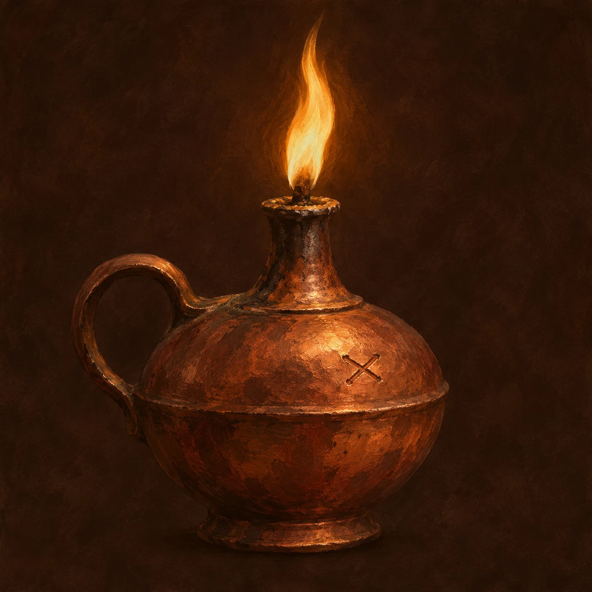
Медная лампа с круглым резервуаром и узким горлышком, зачернённым копотью. Горит на костяном сале ровным жёлтым огнём, пахнет жиром и тёплым металлом. На боку выбито чьё-то клеймо — две пересечённые линии.
Марк отдаёт её отряду по уговору в вечер 3, если отряд пообещал помочь с рамой. Раз за вечер на глубине 3–5 одна сцена идёт при лампе без траты запаса. Пряхи чуют запах сала: в вечер 7 (сцена 2, «Полоса дня») они идут прямо на отряд и мирного пути нет. В финальном бою поставленная на пол лампа уводит два удара корня: корень гасит её вместо хватки, после второго удара она гаснет. Запаса это не стоит; Марк, стоящий у своей лампы, — не цель для корней и пасти.

Белый осколок кости размером с ноготь большого пальца, гладкий с одной стороны и пористый с другой. Лежит в маленькой сумке Устины. Рядом с ним ладонь чувствует лёгкое тепло, хотя вокруг прохладно.
Устина отдаёт его (вечер 4, сцена 3), если отряд спрячет его в свой футляр или в шерсть Марка, и сама доплачивает за это связкой (+1). Идущий следом идёт за осколком по белому полу; в закрытом футляре или плотной шерсти его не чуют. Если осколок несут открыто, в вечер 6 Идущий бьёт сначала несущего. Осколок можно бросить назад, на белый пол: Идущий возьмёт его и уйдёт вниз, а кость будет потеряна. В вечер 8 это тёплая кость-приманка: гнездо идёт к такой кости на полу, а если её проглотило, то кость исчезает. Если осколок вынести наружу, его кладут на соль.
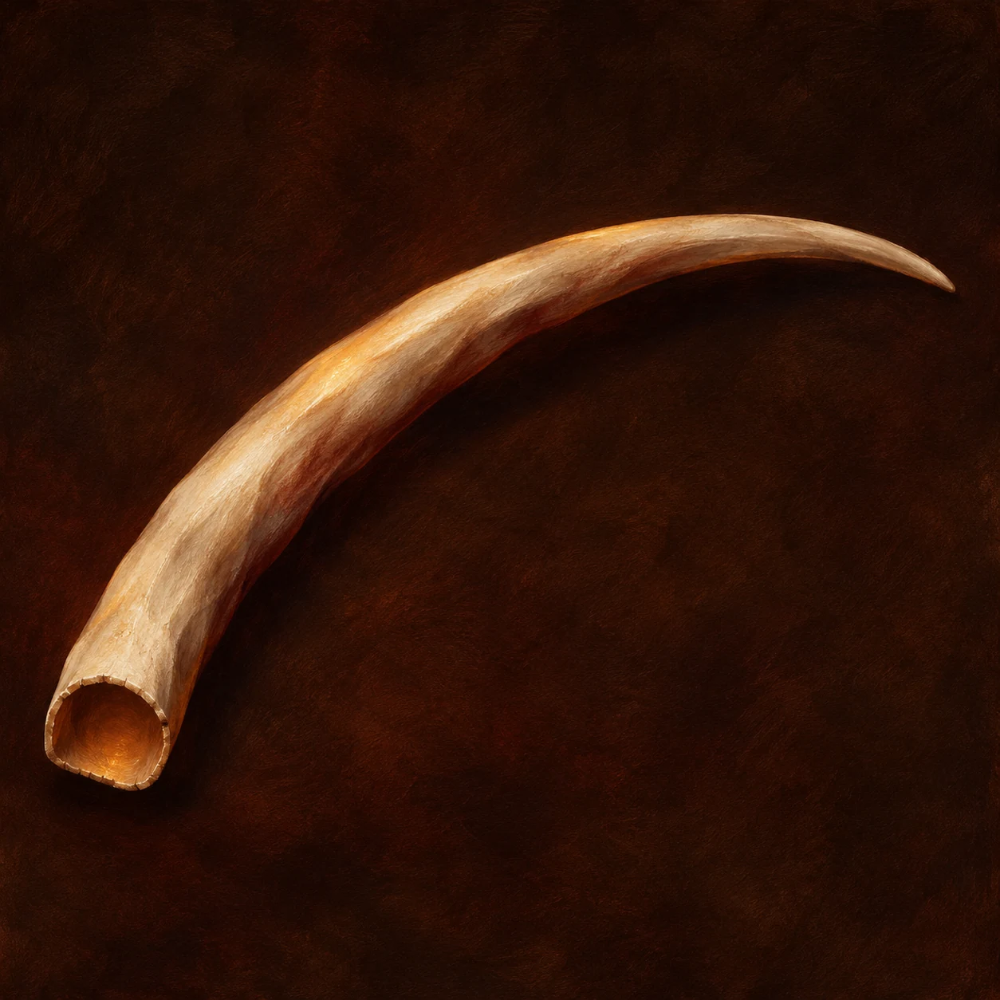
Гладкая белая дуга длиной в локоть, чуть изогнутая, с ровным срезом на одном конце. На ощупь тёплая, как камень, долго лежавший на солнце. Лёгкая, внутри пустая.
Появляется, когда её отламывают от решётки: Сила СЛ 10 или двое героев без броска. Эрна просит об этом сама. Отломанная, она тихо отвечает своим голосом, когда рядом спрашивают: о небе, о Даре, о своём «нет». Это тёплая кость-приманка: Идущий и гнездо идут за ней, пока она открыта; футляр или шерсть прячут тепло. Если её отдать гнезду, она исчезает. Если вынести наружу: после «Чаши разбита» остывает и становится наследством Дары; после «Венца в живой кости» остывает, а голос Эрны уходит в победителя; после «Шов сошёлся» на следующем рассвете говорит один раз и гаснет в соли. Её нужно положить на соль.

Белое зерно величиной с кулак в тонкой полупрозрачной скорлупе. Тёплое на расстоянии ладони. Висит на тонкой нити между костями и чуть покачивается, когда рядом дышат.
Взять можно без броска только тому отряду, который уже видел зёрна (наблюдение «Зёрна», вечер 5, сцена 2); нити рядом вздрагивают к руке. Это тёплая кость-приманка: в вечер 8 лежащее зерно уводит гнездо; пасть глотает его без атаки, и гнездо встаёт на дыбы — чаша открыта, но только для ближних ударов. Футляр или шерсть прячут тепло. Если зерно вынести наружу, его надо положить на соль. Нести его открыто в вечер 6 опасно: Идущий бьёт сначала несущего. Дополнительная приманка в финальном бою.

Прочный плетёный шнур с восемью узлами. Семь узлов срезаны, остатки торчат обрывками, один узел целый, туго затянутый. Лежит в мешке у сухой площадки Колыбели вместе с пайками и факелами.
Узлы-отметки показывают старые колышки узкого пути вверх: подъём к лазу в Шероховатом провале (вечер 6, сцена 2) проходит без броска. Целый узел знаком Освину: если показать шнур ему или Даре, Освин плачет, Дара молчит. Мешок даёт запас +2 вместе со шнуром. Отряд с ним также лучше отыскивает колышек у лаза (улика «Лаз над трущимися стенами»).
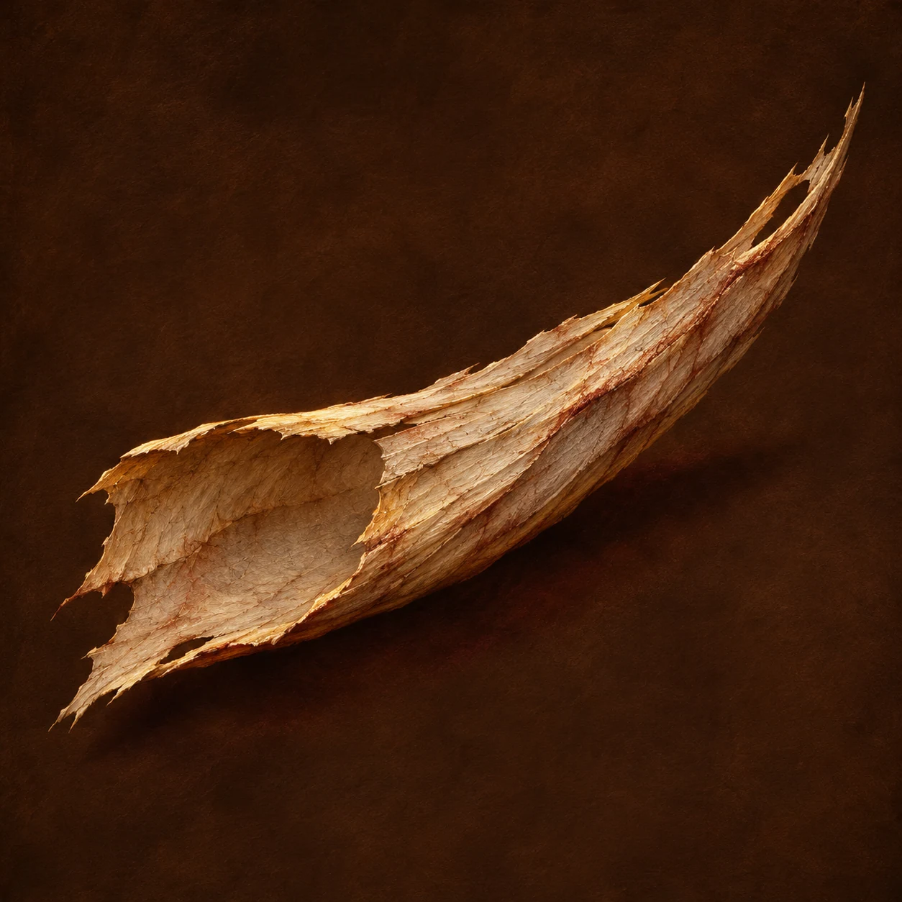
Сухой сегмент оболочки величиной с ладонь, лёгкий и ломкий на вид, как старый тростник. Края острые. Если сжать в руке, внутри ощущается слабое тепло.
Остаётся после боя «Тот, кто идёт следом», если Идущего убили или прогнали ниже половины хитов. Если отряд обошёл его по чёрному, щепы нет; если увёл брошенной костью — щепы нет, а кость достаётся гнезду, и в финале нужна лишняя трещина. Это тёплая кость-приманка в вечер 8: гнездо идёт к такой кости на полу, Ирма может подтянуть её крюком. Футляр или шерсть прячут тепло. Если вынести, её кладут на соль.
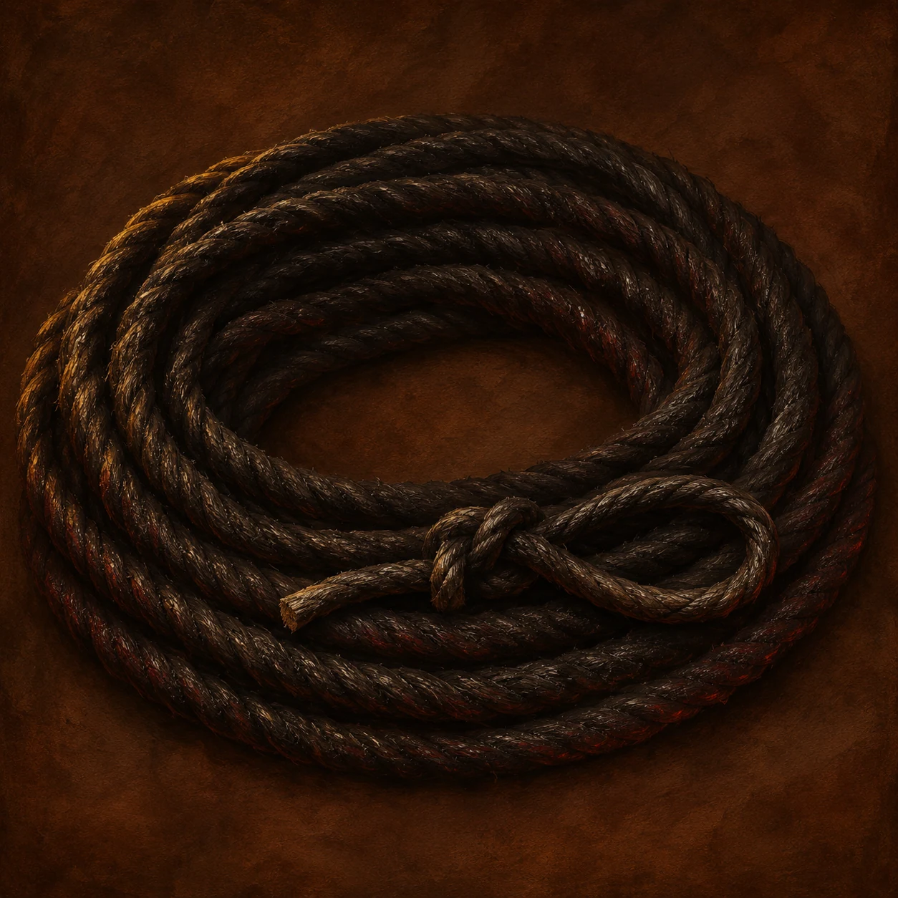
Сорок саженей просмолённой верёвки, плотной и тяжёлой, чёрной от смолы. На конце вязаный узел с простой петлёй. Верёвку сбрасывают сверху, из полосы дня.
Достаётся после сцены 2 вечера 7: Стась сбрасывает её сам. На Лестнице дыхания (вечер 7, сцена 3) даёт спуск и подъём во тьме без броска, особенно вместе с крюком Ирмы. В вечер 8 с её помощью можно пройти карниз Висячих зубьев без проверки. В финальном бою, если верёвка натянута у шва (одно дело подготовки), лежащих героев выносят из 4 клеток от героя, стоящего в зоне шва, а не из 2.


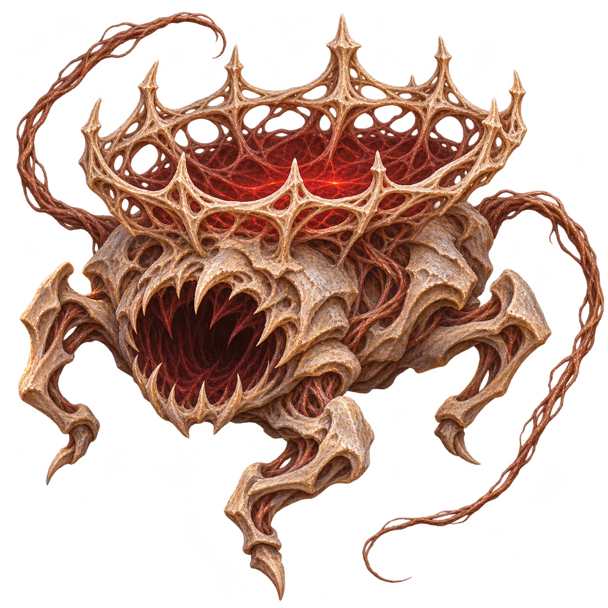
Условия: В бою у шва (вечер 8) последняя нужная трещина легла в открытую мозговую чашу до конца восьмого раунда и раньше, чем гнездо выдохнуло зёрна.
Гнездо оседает на три ноги. Венец осыпается белой пылью в свете шва, голоса замолкают одним последним словом — тем, что последним сказал кто-то из живых. По всему Олому выеденные ложатся и больше не встают. Отряд выходит до восьмого счёта. Если кость Эрны вынесена и не отдана гнезду, Дара получает её — тихую, обыкновенную.
Цена: Голоса исчезли навсегда, голос Эрны тоже: если она не ответила Даре раньше, ответа не будет. Нить уходит в кость руки героя, сделавшего последнюю трещину: кость белеет и теплеет, на каждом рассвете ноет. Нить немая; она проснётся, если носитель снова войдёт в Олом, и после его смерти тело надо в тот же день сжечь или положить на соль.
Условия: В бою у шва последний удар свалил тушу гнезда (хиты до нуля), а чаша осталась целой: трещин меньше нужного, даже если их две из трёх.
Туша падает, венец трескается, и голоса уходят вместе с нитью в героя, нанёсшего последний удар. Венец осыпается; голоса остаются — в нём. На каждом рассвете победитель слышит их одним голосом, и через него Эрна может ответить Даре.
Цена: Гнездо живёт в победителе. На каждом рассвете голоса просят нести их к свету и к людям; управлять героем они не могут, но тишины на рассвете у него больше не будет. Мёртвые Олома пойдут к нему, если он приблизится к шву. Когда он умрёт, тело надо в тот же день сжечь на соли, иначе из его костей вырастет новое гнездо со всеми голосами и с его собственным.
Условия: Бой у шва проигран или брошен: живое гнездо стояло в зоне шва в конце шестого раунда и выдохнуло зёрна; или восьмой счёт застал его живым; или все стоящие герои вышли из шва либо упали.
Шов сходится. Снаружи — те, кто вышел, и те, кого вынесли. Нить не досталась никому. Если кость Эрны вынесена, на следующем рассвете она один раз говорит своим голосом, а потом соль гасит её.
Цена: Если гнездо выдохнуло зёрна, рассветный ветер несёт их над соляным ущельем: соль гасит большую часть, но ущелье закрыто для людей на поколение. Если не выдохнуло — оно ждёт за швом, и Дара с Освином должны караулить каждый рассвет. Герои, оставшиеся внутри, не возвращаются; их голоса становятся частью общего голоса. Наследства нет.
Авторская подготовка и техническая проверка не заменяют живую игру. Длительность, сложность и эмоциональное восприятие пока не проверены группой. Иллюстрации (43) созданы генерацией изображений OpenAI в одном стиле; тактические схемы построены из данных встреч. Полный каталог содержит материалы ведущего — публиковать его целиком для игроков нельзя.